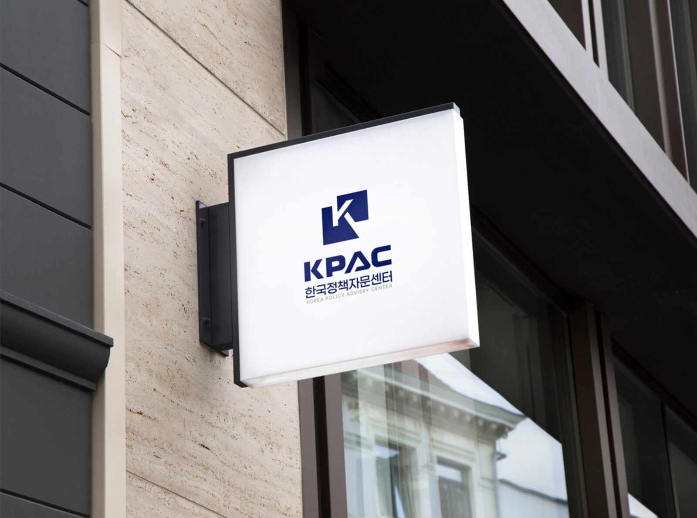
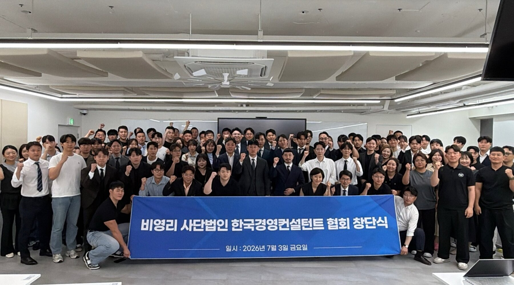

회사소개
기업과 장기적 관계를 유지하며,
함께 성장하는 파트너
한국정책자문센터는 중소기업과 스타트업의 경영 전반을 지원하는 종합 경영자문 기관입니다. 정책자금 지원을 시작으로 세무, 지식재산권, 법률, 채권 · 채무, 투자유치, M&A까지, 사업의 시작부터 성장, 엑시트까지 함께합니다.
2,000건+
누적 상담
8개 분야
정책자금부터 투자유치 · M&A까지
5개 기관
중진공 · 기보 · 신보 · 소진공 · 지역신보
17개 시도
지자체 지원사업 함께 검토

대표 인사말
“자금 조달은 시작일 뿐,
진짜 일은 그 다음부터입니다.”
한국정책자문센터 대표 이남인은 정책자금 컨설팅을 단발성 서비스가 아닌, 기업의 자금 · 투자 · 법률을 아우르는 종합 경영컨설팅 산업으로 만들어가고 있습니다.
수백 건의 기업 재무제표 분석과 심사 대응 경험을 바탕으로, 단순히 서류를 대행하는 것이 아니라 기업의 재무 구조 자체를 진단하고 성장 전략을 함께 설계합니다.
한국정책자문센터 대표이남인
연혁
한국정책자문센터가
걸어온 길
정책자금 컨설팅에서 시작해 기업 성장 전 과정을 함께하는 경영자문 기관으로 넓혀 왔습니다.
- 2025한국정책자문센터(KPAC) 출범정책자금 컨설팅을 시작으로 기업 자금조달 자문 체계 구축
- 2026. 07비영리 사단법인 한국경영컨설턴트협회(KMCA) 창단정책자금 분야 국내 유일 협회 설립, 전문가 네트워크 기반 컨설팅 체계 구축
- 2026서비스 영역 확장정책자금을 넘어 경정청구 · 투자유치 · M&A · 채무조정, 사업 고도화(DX · AX)까지 확대
- 누적 실적누적 상담 2,000건 이상기보 · 신보 · 중진공 · 소진공 전 채널 대응 경험 축적

소속 협회
비영리 사단법인
한국경영컨설턴트협회 소속
한국정책자문센터는 정책자금 분야 국내 유일의 비영리 사단법인인 한국경영컨설턴트협회(KMCA) 소속입니다. 컨설턴트 한 사람이 아니라 협회의 전문가 네트워크와 함께 일합니다.
상담은 협회의 심사 기준과 윤리 기준에 따라 진행됩니다.
협회 홈페이지회사 정보
사업자 정보
| 상호 | 한국정책자문센터 (KPAC) |
|---|---|
| 대표 | 이남인 |
| 사업자등록번호 | 111-13-97163 |
| 업태 · 종목 | 전문, 과학 및 기술서비스업 · 경영 컨설팅업, 광고 대행업 |
| 소속 | 비영리 사단법인 한국경영컨설턴트협회 |
| 주소 | 경기도 남양주시 두물로11번길 40-26 |
| 대표전화 | 1866-1912 |
| 이메일 | info@kpac.store |